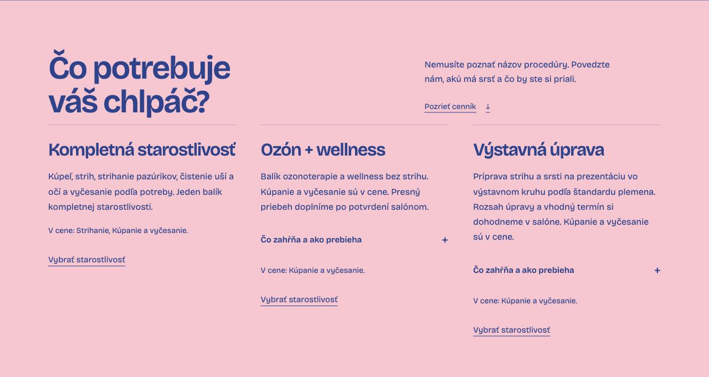

Podklady, ktoré na seba nadväzujú.01
AI · weby · projektová práca
Vitaj vmojomsvete.
Som Denis. Tvorím weby, digitálne produkty a pracovné postupy s AI. V CASSIS Consult pripravujem a implementujem grantové projekty.
↓ Pozrieť vybrané projektySlovensko ✳ otvorený spolupráci
01 / Vybraná prácaWeby · produkty · AI v praxi ↘
Každý projekt
má svoj príbeh.
Web pre salón, vlastný produkt a AI v projektovej agende. Tri ukážky toho, čo navrhujem, tvorím a používam.
Starostlivosť aj o detail.02

Jedna zákazka. Tri dokumenty.03Údaje raz.
Modelová zákazka / 2026↗
PREBERACÍ PROTOKOL
ZÁKAZKOVÝ LIST
CENOVÁ PONUKA↗
Údaje raz.
Dokumenty spolu.
Modelová zákazka / 2026✓ Údaje zadané iba raz
V detailoch projektov nájdeš zadanie, moju úlohu, spôsob riešenia aj aktuálny stav.
02 / Ako pracujemPrejdi si pracovný postup ↙
Jasno v tom,
čo je ďalej.
AI pomáha spracovať informácie.
Ja overujem podklady a určujem ďalší krok.
PRACOVNÝ PRIESTOR01 / 04
Modelový príklad · bez klientskych údajov
Pochopiť,
čo treba riešiť.
Z porady alebo správy vyberiem konkrétnu požiadavku. Rozlíšim, čo máme doplniť a ktoré informácie chýbajú.
Najprv si ujasním zadanie.
03 / Projektová praxCASSIS Consult · spolupráca v tíme
Od žiadosti
po implementáciu.
V CASSIS Consult pripravujem a implementujem grantové projekty pre firmy a samosprávy. Riešim žiadosti, rozpočty, zmeny, podklady k platbám a administratívu počas realizácie.
Uvedená podpora patrí prijímateľom. Na projektoch pracujeme ako tím.
Výskum a inovácie
Corinex
Pracovné balíky, projektové podklady a anotácia projektu.
482 293 €podpora podľa zmluvy 261/2025
↗Cestovný ruch
Autokemping Tornaľa
Podklady k žiadosti a projektová administratíva počas realizácie.
293 500 €príspevok podľa zmluvy FNPCR
↗Obnova verejnej budovy
Knižnica Horná Kráľová
Rozpočtové podklady, prílohy a koordinácia pred uzavretím zmluvy.
867 180,67 €Schválená podpora · MoF 6/2026
✓Environmentálna agenda
Projekty pre samosprávy
Príprava žiadostí, rozpočty a podklady počas implementácie.
Envirofondpríprava a implementácia
↗Pri každom projekte uvádzam stav podpory podľa podkladu. Schválenie alebo zmluva ešte neznamenajú dokončenú realizáciu.
d↗
Zvedavosť
je začiatok. ✳
je začiatok. ✳
Denis Baláž
Slovensko · 2026
04 / Človek za projektmi
Baví ma vedieť,
čo je za tým.
Od nápadu po verziu, ktorá sa dá vyskúšať.
Pri digitálnych projektoch riešim návrh, texty, používateľský postup aj technickú realizáciu s podporou AI. Skúšam jednotlivé scenáre a zapracúvam spätnú väzbu.
Z grantovej praxe si prenášam prácu s podkladmi, termínmi a nadväzujúcimi krokmi. Chcem rozumieť tomu, pre koho riešenie vzniká, čo má zjednodušiť a ako spoznám, že funguje.
Návrh produktovAI v praxiUX/UI & prototypyPríprava a implementácia grantov
Externá spolupráca · tímové projekty
Čo vytvoríme
spoločne?
Hľadáš kolegu na web, digitálny produkt alebo zlepšenie pracovného postupu?
Ozvi sa a prejdime si, s čím viem pomôcť.